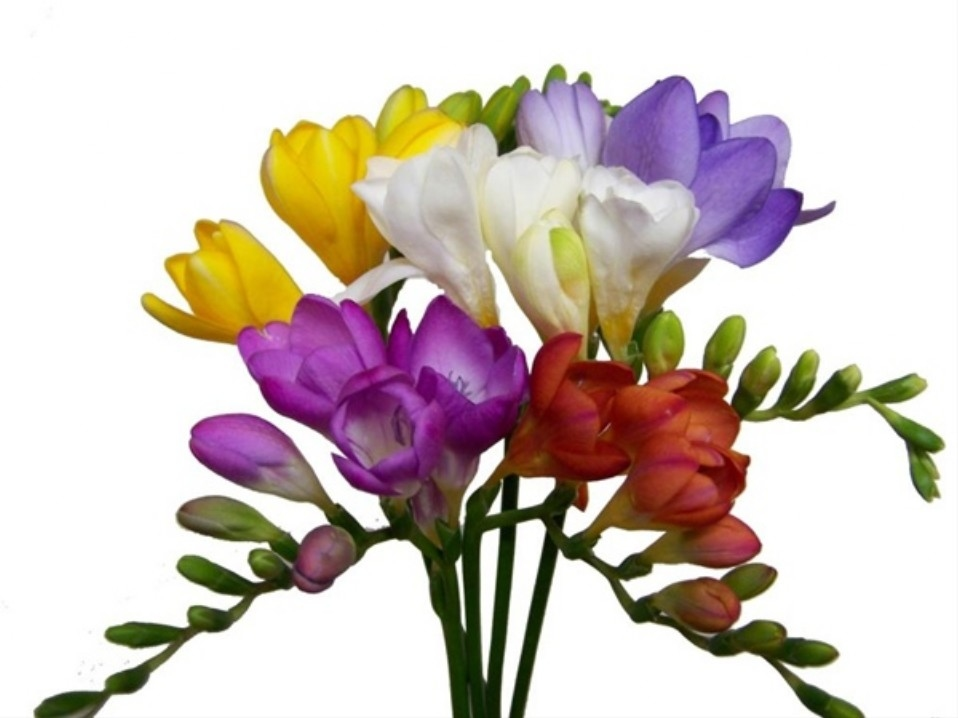

I love:
Styles!
The CSS font-family property defines the font to be used for an HTML element.
Chapter Summary:
Use the style attribute for styling HTML elements.
Background-color for background color
Color for text colors
Use font-family for text fonts
Use font-size for text sizes
Use text-align for text alignment
For more details inspect me :)
This text is bold
This text is italic
This is subscript and superscript.
Formatting elements were designed to display special types of text:
Cancel cancel like that.
Don't cancel cancel that cancel.
Freesia flower meanings generally include friendship, trust, thoughtfulness and innocence. They are a popular gift for friends and family, and is a popular flower amongst various cultures. According to the Victorian language of flowers, the freesia is the ultimate flower of trust. In the United States, the freesia is the official flower to commemorate a couple’s seventh wedding anniversary. In numerology, freesias signify the number nine, which signifies selflessness and obligation. Since the 1950s, freesias have been widely used as wedding flowers because they represent both the purity of the bride as well as the trust between the couple.
Freesii by my grandfather
Freesia: Due to their delicate fragrance, freesias are one of the most popular flowers in the world. However, they are very difficult to grow in domestic gardens and their petals are extremely delicate.
You can find me at this indirection:
North Polealexandra andrea felix brando